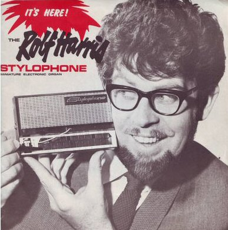

Tuesday, March the 30th, 2010
back to: title, date or indexes
Much cause for cheer and wassail today, as we celebrate Rolf Harris' eightieth birthday, or Rolfmas. As far as I recall I have never written extensively about the cultural phenomenon that is this beardy—and now octogenarian—Antipodean, but one day I shall, when my poor prose is sufficiently boosted to address it properly.
